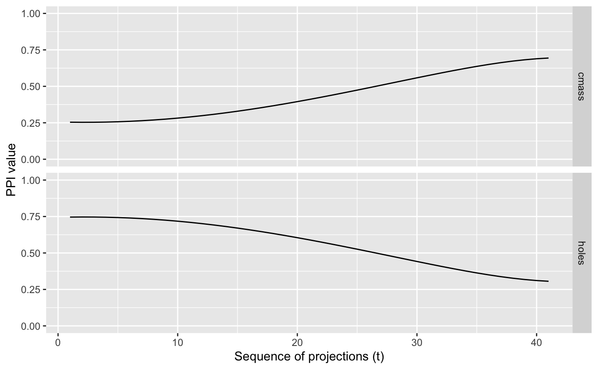

Studying Projection Pursuit INdex functions through Exploration Based on Interpolated tour paths and Line graphs. spinebil provides functionalities to evaluate the performance of projection pursuit index functions using tour methods as presented in this paper.
Installation
You can install the released version of spinebil from CRAN with:
install.packages("spinebil")You can install the development version from GitHub with:
# install.packages("devtools")
devtools::install_github("uschiLaa/spinebil")Example
To evaluate the index behaviour on a known input distribution we can trace its value when interpolating a tour path, for example moving from nuisance and structured projection.
library(spinebil)
## sample from the spiral distribution
d <- spiral_data(100, 4)
## the first two parameters are noise
## parameters 3 and 4 contain a spiral
## we write a list with the nuisance and structured plane
m <- list(basis_matrix(1,2,4), basis_matrix(3,4,4))
## the index functions to be evaluated should also be passed in a list
index_list <- list(tourr::holes(), tourr::cmass())
index_labels <- c("holes", "cmass")
## we can now compute the index traces and plot them
trace <- get_trace(d, m, index_list, index_labels)
#> Converting input data to the required matrix format.
plot_trace(trace)